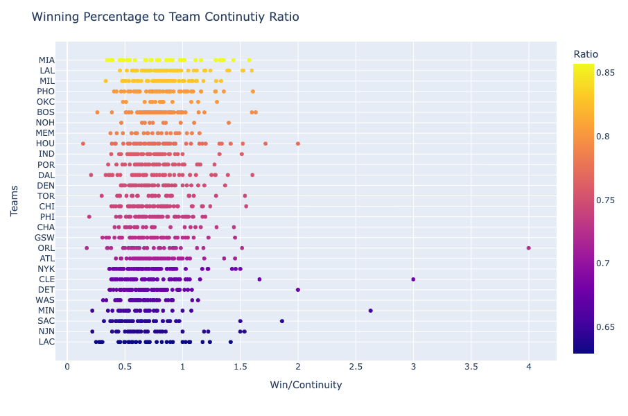

NBA Sports Analytics
In this project we scraped basketball’s meta, player and team data in order to find useful insights
Then designed a multiplayer Basketball Simulator WEB APP using our statistical predictive models
Below I have outlined the steps in detail:

The sources utilized to scrape the data were from NBA.COM and Basketball-Refrence. Data on these websites are provided by ‘SPORTS RADAR’, (A Sports Technology Company), the official stats partner for the National Basketball Association (NBA). We scraped the data using BeautifulSoup4 library in python. Then we performed Player Analysis, Team Analysis, and Meta-Game Analysis in order to get a better understanding of what and why certain tactics/strategies work. The following questions were answered:
How does player continuity affect the overall success of the team?
One of the most frequently overlooked ingredients in the recipe for winning a championship has been team consistency. In order to secure a win is it important for NBA teams to stick to the same players so that the teams can evolve together and do better?

Above graph represents data from Season 1975-2022. After analyzing we can concluded that there exists a postive correlation between Winning Percentage and a team's continuity percentage. As a result it is more likely for a team that sticks together to secure a win for in that season.
From the second graph, we can observe the ratio of Winning Percentage to Continuity over all the seasons, sorted from highest to lowest average ratio. This figure focuses on teams that have the least roster retention, and acts as a complementary metric for the previous scatterplots. The greater the ratio, on average, the more wins a team is able to produce with fewer returning players. You can see that this metric is highest for the Miami Heat and the L.A. Lakers.
How does playing defensively vs offensively impact a teams overall season?
There is a common understanding in the NBA that defense has a bigger impact on the overall team success compared to offense. On multiple occasions commentators and NBA legends like Bill Russel have been quoted saying "Offense wins games, Defense wins Championships. In order to test this theory we used SQL Alchemy and pandas library in python to insert the csv data into our database and then ran SQL queries to get the results.
The plotted bar graph concludes that there are slightly more defensive teams winning the NBA Championships, but it is a really slight difference, suggesting the concept of "Defense wins Championships" is fairly unfounded.
How do injuries affect player contract prices?
Injuries and the notoriously harsh NBA schedule goes hand in hand. Many players have been affected by the "injury bug" due to this high-paced schedule and have lost money and health over the years. So here we have analyzed the average amount of money a player loses due to injuries.
The data above from season 2012-2022 represents the players split into two categories based on the frequency of injuries compared to the sum of the salaries. The current players who have been injured more than 20 times over the last 10 years were categorized as High frequency of injury, while all other players have been categorized as Low frequency We conclude that players that have a high frequency of getting injured have ~25% of the contract value of low injury frequency players.
Fantasy Game Simulator
The culmination of the entire group's work from data collection to model building can be seen in this component of our project. The game allows users to pick a team of ten from a selection of current players in the 2022-2023 with a predetermined salary cap. The teams built by the players can go then go head to head against one another in a simulated game with the click of a button. The results of the simulated matchup are computed through models built using Multiple Linear Regression and random sampling, providing us with a breakdown of scores similar to those of an actual NBA game.

The data above from season 2012-2022 represents the players split into two categories based on the frequency of injuries compared to the sum of the salaries. The current players who have been injured more than 20 times over the last 10 years were categorized as High frequency of injury, while all other players have been categorized as Low frequency We conclude that players that have a high frequency of getting injured have ~25% of the contract value of low injury frequency players.
Overview
- Server
- Models
- Web Application Client
The server is the location where the user login credentials, the details to create a new user and database is hosted where querying is done on demand based on the specific player selected and requirement of the current player statistics.
The models make up the component of the web application responsible for simulating the basketball game outcomes. The data used in this model can be found under the header "Parsing per game statistics per player for each team". By predicting the individual player scores of a particular roster (which consists of three-pointers scored, two-pointers scored, etc.), we are able to simulate semi-realistic game outcomes and determine a winner.
The web app client is built with `React`. The web app has components like player selection for a team roster, viewing the fantasy team statistics and game simulation.